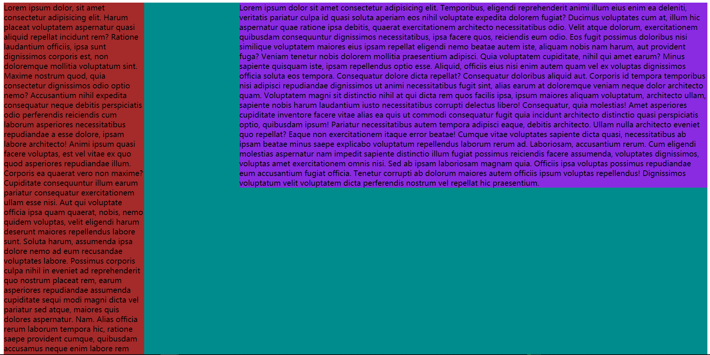
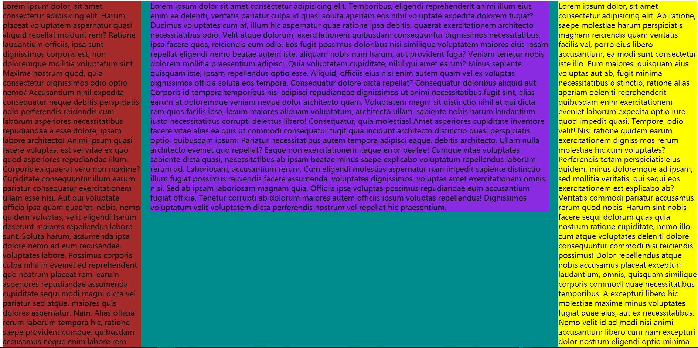

布局
布局，是每个前端工程师的基本功。结合自己的学习，总结一下自己所了解的一些比较重要的关于布局的一些知识
比如：两栏布局，三栏布局（统称为多栏布局），等高布局等等
两栏布局
定宽做法
css代码
1 | .container{ |
2 | background-color: #008c8c; |
3 | } |
4 | .aside{ |
5 | float: left; |
6 | background-color: brown; |
7 | width: 300px; |
8 | } |
9 | .main{ |
10 | float: right; |
11 | background-color: blueviolet; |
12 | width: 1000px; |
13 | } |
14 | .clearfix::after{ |
15 | content: ''; |
16 | display: block; |
17 | clear: both; |
18 | } |
html代码
1 | <div class="container clearfix"> |
2 | <aside class="aside">lorem*10</aside> |
3 | <div class="main">Lorem*10</div> |
4 | </div> |
效果图

注意：
- html中的 lorem*10是乱数假文，是代替文字的。偷懒使用一下 ，在你需要使用的时候，在编辑器中输入lorem*10就会出现图片上的那些英文
- 现在实现的两栏布局是定宽的。但是，很多时候的业务需求可能是主体区域是不定宽的
不定宽做法
只需要把主体区域的定宽的属性删除，把浮动属性删除，添加上overflow: hidden属性即可
css代码
1 | .container{ |
2 | background-color: #008c8c; |
3 | } |
4 | .aside{ |
5 | float: left; |
6 | background-color: brown; |
7 | width: 300px; |
8 | } |
9 | .main{ |
10 | -float: right; |
11 | background-color: blueviolet; |
12 | -width: 1000px; |
13 | +overflow: hidden; |
14 | } |
15 | .clearfix::after{ |
16 | content: ''; |
17 | display: block; |
18 | clear: both; |
19 | } |
减号代表删除的代码，加号代表添加的代码
html代码不变
效果图不再展示，因为展示的话需要gif动态图，制作太繁琐。如需看效果，只需要把代码粘过去运行即可
注意：要想知道为什么加了overflow: hidden属性后可以实现这种效果，请详细了解块级格式化上下文（简称：BFC），其他文章有详细介绍。html部分，需要（必须）把浮动元素放在前面
可能你会遇到这种问题：两个区域距离太近，想让中间有缝隙，这该怎么做呢？
答：
- 设置浮动元素的外边距即可，那边需要缝隙，就写那边的外边距。
- 如果你设置的不是浮动元素，还要与浮动之间有距离，那你就必须设置你想要的距离加上浮动元素的宽度
三栏布局
三栏布局的原理：三栏布局以及多栏布局的思想和两栏布局相同。
css代码
1 | .container{ |
2 | background-color: #008c8c; |
3 | } |
4 | .left{ |
5 | float: left; |
6 | background-color: brown; |
7 | width: 300px; |
8 | margin-right: 20px; |
9 | } |
10 | .main{ |
11 | background-color: blueviolet; |
12 | overflow: hidden; |
13 | } |
14 | .right{ |
15 | float: right; |
16 | width: 300px; |
17 | background-color: yellow; |
18 | margin-left: 20px; |
19 | } |
20 | .clearfix::after{ |
21 | content: ''; |
22 | display: block; |
23 | clear: both; |
24 | } |
html代码
1 | <div class="container clearfix"> |
2 | <aside class="left">Lorem</aside> |
3 | <aside class="right">Lorem</aside> |
4 | <div class="main">Lorem</div> |
5 | </div> |
效果图：

注意：上面代码为自适应的布局
等高布局
方式一 ： CSS3的弹性盒模型
方式二 ： javascript控制
方式三 ： 伪等高
核心思路：
- 给非主体盒子设置一个主体盒子永远都不可能超出的高度
- 给非主体盒子设置一个下外边距为 高度 减去 需要显示的非主体盒子的其他盒子的最大高度 的负边距。例如下面代码：margin-bottom: -（10000-710）px。此时，清除浮动的伪元素必定会在次处或以下
- 给总体大盒子设置为overflow: hidden，让超出的隐藏。
- 这样，当主体内容足够多时，其他区域就会以背景图的方式显示
缺点：必须要精确的得知侧边栏的高度，以防止主体区域内容过少，使其他的盒子显示不全
css代码
1 | .container{ |
2 | background-color: #008c8c; |
3 | overflow: hidden;//+ |
4 | } |
5 | .left{ |
6 | float: left; |
7 | background-color: brown; |
8 | width: 300px; |
9 | margin-right: 20px; |
10 | height: 10000px;//+ |
11 | margin-bottom: -9290px;//+ |
12 | } |
13 | .main{ |
14 | background-color: blueviolet; |
15 | overflow: hidden; |
16 | } |
17 | .clearfix::after{ |
18 | content: ''; |
19 | display: block; |
20 | clear: both; |
21 | } |
html代码与两栏布局相同
演示就不再次演示了 大家可以实操练习下
多栏布局都可以使用这种思想做
注意：这种方式实现的并不是真正的等高，而是伪等高，就是看着是等高，其实不是
html元素的书写顺序
必须先写浮动元素，然后再写自适应元素
原因：如果先写自适应元素，自适应元素是常规流盒子，默认是撑满屏幕的。然后，下面再使用浮动元素的时候，浮动元素会避开标准流盒子。就会导致，自适应的盒子再顶部，浮动的元素在下面
27分
原文作者: Yunjie Ge
原文链接: http://www.blog.geyunjie.com/2018/07/13/layout/
版权声明: 转载请注明出处(必须保留作者署名及链接)